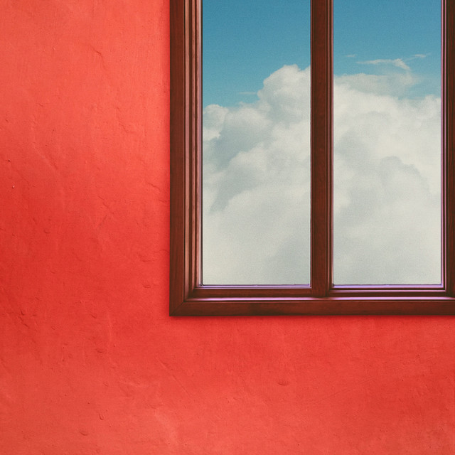

Khruangbin - A LA SALA



Información del álbum facilitada por discogs.com:
Fecha de lanzamiento: 2024
Géneros: Funk / Soul
Estilos: Desconocidos
Tracklist:
A1. Fifteen Fifty-Three
A2. May Ninth
A3. Ada Jean
A4. Farolim De Felgueiras
A5. Pon Pón
A6. Todavía Viva
B1. Juegos Y Nubes
B2. Hold Me Up (Thank You)
B3. Caja De La Sala
B4. Three From Two
B5. A Love International
B6. Les Petits Gris